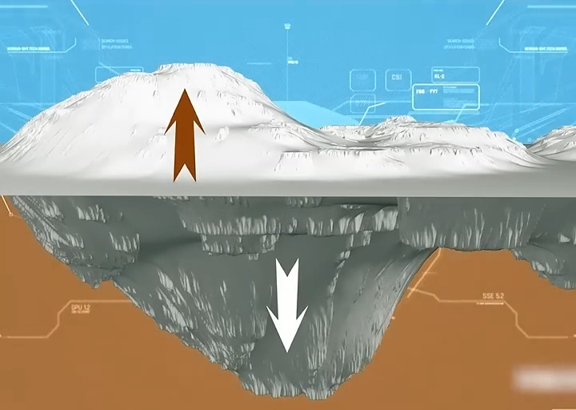
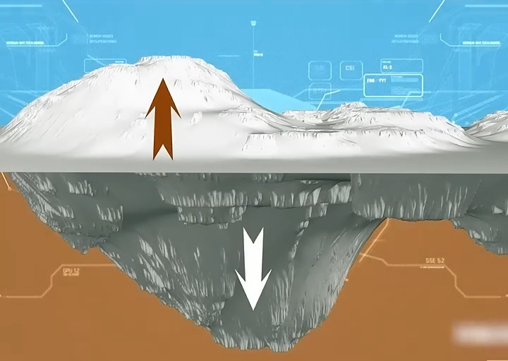

ادعای ملحد و پاسخ
# ادعای ملحد
# جواب
جناب آقای زمینشناس آیا واقعا هم اینجوریه؟
در اواخر سال ۱۹۷۰ دانشمند برجسته زمینشناسی جان ساپ بعد از مطالعات زیاد به این نتیجه رسید که:
کوهها نقش بسیار مهمی در کاهش زلزلهها و تثبیت پوسته زمین دارند.
ریچارد فاینمن فیزیکدان برجسته آمریکایی که موفق به دریافت جایزه نوبل شد:


با شبیهسازی رایانهای به نقش بسیار مهم کوهها در جلوگیری از زلزلههای شدید اشاره میکند.

 

و همچنین دکتر فرانک پرس که ۱۲ سال رئیس آکادمی ملی آمریکا بوده و یکی از نویسندگان کتاب مرجع زمینشناسی به نام کتاب زمین است؛ او در این کتاب کوهها را مثل «میخ» برای زمین معرفی میکند که نقش بسیار مهمی در تثبیت پوسته زمین و جلوگیری از حرکات شدید زمین دارند.
و چه زیبا خداوند ۱۴۰۰ سال قبل به این فکت علمی اشاره میکند و میفرماید:
«در زمین کوهها استواری قرار داد تا شما را نلرزاند»
«کوهها را میخهای زمین قرار دادیم»
این تطابق بین قرآن و علم نشاندهنده اعجاز علمی قرآن است که قرنها پیش از کشفیات علمی امروز به آن اشاره شده.
آیا واقعا اگر قرآن کلام خدا نیست، چطور ۱۴۰۰ سال پیش این همه فکت علمی درونش وجود دارد؟
نکات تکمیلی
- در زمینشناسی مدرن ثابت شده کوهها ریشههای عمیقی در پوسته زمین دارند که مانند میخ در خاک فرو رفته و به پایداری صفحات تکتونیکی کمک میکنند.
- این ریشههای کوهها باعث میشود فشارهای درونی زمین پخش شده و شدت لرزشها کاهش یابد؛ نقشی که قرآن با تعبیر «رواسی» و «میخ» به زیبایی بیان کرده.
- دانش امروز تأیید میکند کوهها نه تنها سازههای سطحی، بلکه ستونهای استوار پوسته زمین هستند؛ چیزی که قرآن قرنها پیش توصیف کرده بود.
- این هماهنگی میان یافتههای ژئوفیزیک و کلام وحی، بار دیگر نشان میدهد قرآن فقط سخن بشر نیست، بلکه کلام الهی است.